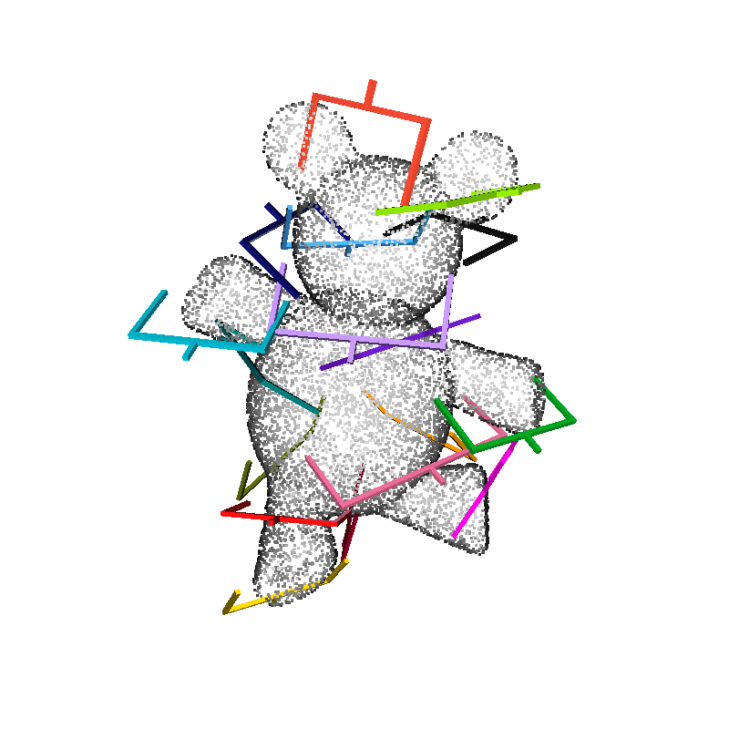
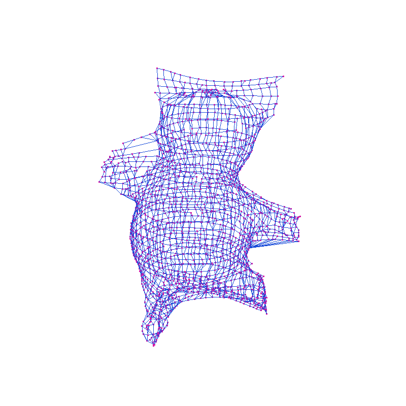
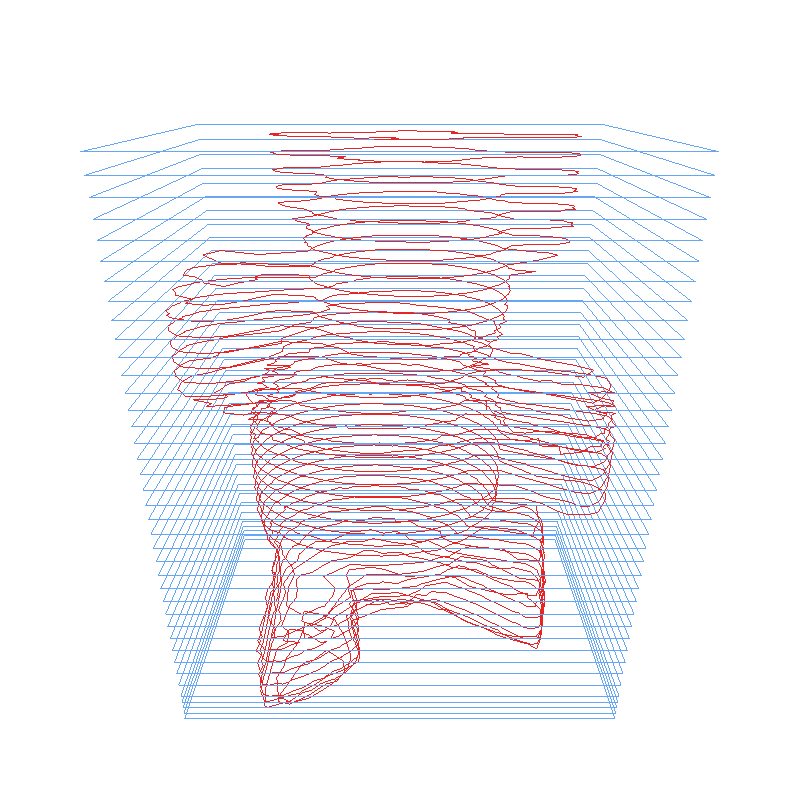

SkelGG-CNN
Geometry-aware robotic grasping
An automated straight-skeleton pipeline for generating grasp labels without manual annotation, connecting 4-DoF learning with 6-DoF execution.
M.Sc. student in Artificial Intelligence
Sharif University of Technology
I'm a master's student at Sharif University of Technology and a research assistant in the Robust and Interpretable Machine Learning Lab (RIML), advised by Prof. Mohammad Hossein Rohban. My research focuses on reinforcement learning and compositional generalization, with an emphasis on reusable skills that transfer to new environments and dynamics.
Previously, I worked on robotic grasping and manipulation at the Human and Robot Interaction Laboratory (TaarLab), University of Tehran, under the supervision of Prof. Mehdi Tale Masouleh. I received my B.Sc. in Computer Engineering from the University of Tehran in 2025.
Research interests Reinforcement learning, robotics, continual skill discovery, latent world models, and compositional generalization.

Geometry-aware robotic grasping
An automated straight-skeleton pipeline for generating grasp labels without manual annotation, connecting 4-DoF learning with 6-DoF execution.


Task-oriented robotic grasping dataset
A 3D object dataset with task-specific part annotations and grasp poses for functional robotic manipulation, including pouring, tool use, and opening or closing objects.
* Equal contribution.
The International Journal of Robotics Research (IJRR), 2026
33rd Iranian Conference on Electrical Engineering (ICEE), 2025
Preprint, available at SSRN, 2025
M.Sc. in Artificial Intelligence
2025 – 2027 (expected)
B.Sc. in Computer Engineering
GPA: 19.03/20 · Rank: 1/96
2021 – 2025
Head Teaching Assistant · Sharif University of Technology
Fall 2026
Teaching Assistant · University of Tehran
2024 – 2025
Teaching Assistant · University of Tehran
Spring 2025
Teaching Assistant · University of Tehran
2023 – 2024